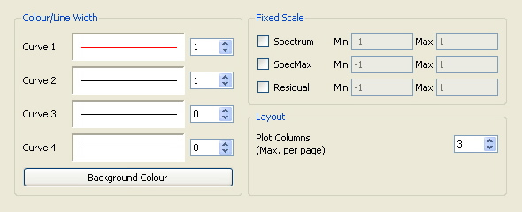
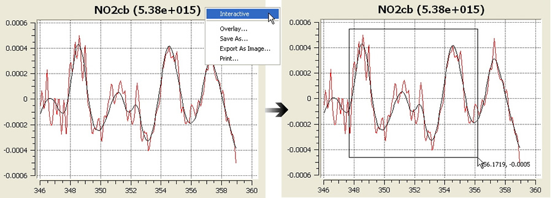

QDOAS Plot Properties

This dialog box allows selecting a different color and a different line thickness for curves 1 and 2 (respectively the spectrum and the reference or the observed optical depth and the calculated optical depth). The number of plot columns impacts the size of the plots.
Handling plots
It is not possible to display a specific plot in another window as it was in WinDOAS but zoom can be made by right-clicking the Interactive option from the title of a plot.

The Save As option saves the plotted curves in a ASCII file (useful for example to create a reference spectrum). Export As image exports the selected plot in a png file while Print sends it to printer. Overlay will load a spectrum from a given file and superpose it over the already plotted curves but this option is not yet implemented.